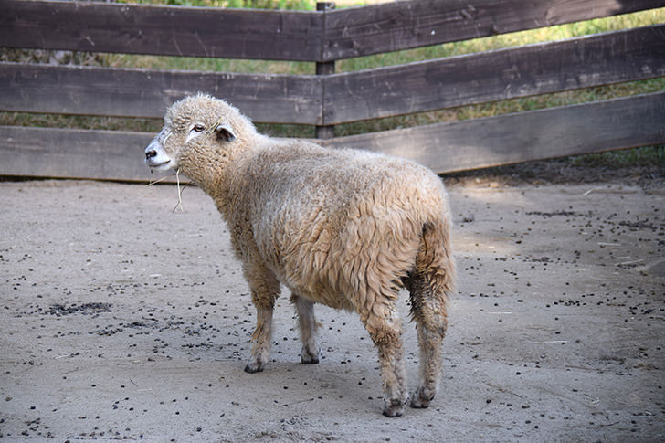

| ヒツジとは |
角をもち、主に羊毛のために家畜化されている動物です。
毛用のヒツジは白い羊毛を産するように改良されていますが、本来の色合いは幅広いです。
羊肉、羊乳、羊毛、羊皮紙など、特に昔のヨーロッパなどで様々な用途で使用されています。 |
| アンサー① |
ウシ科（ ヤギ ）亜科の鯨偶蹄目に分類される動物です。 |
|
|
ムフロン(動物)が家畜化されヒツジ、パサン(動物)が家畜化されヤギになったと考えられています。
|
| アンサー② |
（ 水平に細い ）瞳孔を持ち、優れた周辺視野を持ちます。 |
|
|
視野は270～320°で、頭を動かさずに自分の背後を見ることができます。
奥行きはあまり知覚できず、影や地面のくぼみにひるんで先に進まなくなることがある。
|
| アンサー③ |
非常に（ 群れたがる ）性質をもち、引き離されると強いストレスを受けます。 |
|
|
先導者に従う傾向がとても強いという性質が、家畜化されるにあたり重要な要素となりました。
同じ品種で小グループができるなど、自分と関連あるもの同士で一緒に動く傾向があります。
|
| アンサー④ |
人や他の羊の顔を何年も記憶でき、表情から（ 心理状態 ）を識別できます。 |
|
|
ヒツジは愚かな動物というイメージがありますが、ウシと同程度のIQを持っていることが明らかになりました。
|
| アンサー⑤ |
オスの羊は（ 角のサイズ ）で優位を決めます。 |
|
|
角のサイズが異なるヒツジの間ではあまり争いませんが、同じような角のサイズを持つもの同士では争いが起きます。
|
| アンサー⑥ |
ラムは生後1年以内の子羊の肉で、（ マトン ）は生後2年以上の羊の肉のことをいいます。 |
|
|
羊肉特有の臭みは脂肪に集中するので、臭みを取り除くには、脂肪をそぎ落とすと良いと言われています。
インドのマクドナルドには、ヒンドゥー教の信徒のためにマトンを用いたハンバーガーが販売されているそうです。
|